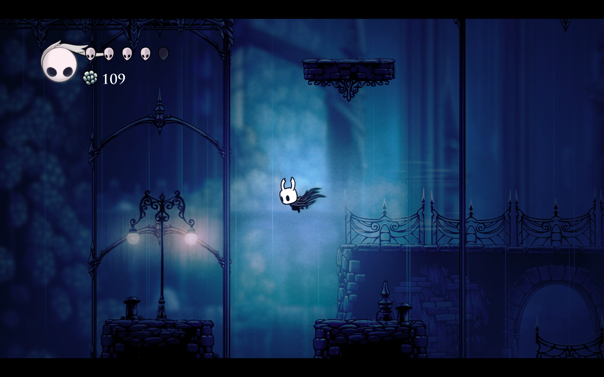

Ari Gibson would be behind the helm when it came to creating the game's distinctive art style, environments, and animating the characters and creatures of Hallownest. With the 2D hand drawn aesthetic, it makes everything feel unique and distinct. Paired with the amazing choice in colour pallette, it helps immerse the player in a decaying, abandoned kingdom. When it does brighten up, it really does emphasise or helps guide the player into something they are wanting to be discovered.
For a game that rarely uses dialogue, the hand drawn animations evoke a curiosity to investigate, or even an emotional investment to certain characters. Whenever I discover a new area I feel like there's so much to be uncovered and found, and that's all on the shoulders of how brillantly the designers cherry picked (no pun intended) what they wanted to strive for, down to each pebble you step over.
Hollow Knight excells in its visual storytelling; from the exploration, interactions, even to the boss fights. Paired alongside the soundtrack, the two go hand in hand in delivering a heartfelt story. Each area has their own history, and are distinct from one another. From the dull and melanchonic City of Tears, which once used to be thriving with life, reduced to a handful. To the Mantis Village, showing their priority on combat and tight hallways, and how abduant it is with opponents.
